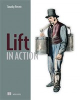

Apache ESME- Lift and social apps
| Author: | Vassil Dichev |
|---|---|
| Date: | 21.10.2011 |
Stairway to Scala
- J2EE refugee
- Spring- "J2EE light"
- Fun with Python/Ruby
- Discovered Scala and Lift
- Time-strapped dad
No time for boilerplate
These days I'd say that my love for expressive programming languages is mostly driven by a near-complete lack of free time.
@fogus
Michael Fogus
Esme who?
- Enterprise Social Messaging Experiment/Environment
- Biggest open-source Lift application
- First Apache project using Scala exclusively
ESME history
- 2007 David Pollak creates Skittr (884 lines)
- 2008 SAP community joins to start ESME
- 2009 ESME moves to Apache Incubator
- 2010 ESME graduates to a top-level Apache project
- 2011 ~8000 lines of Scala
Yet Another App
ANOTHER mobile social group chat photo sharing app! Exactly what I need!
@jorgeortiz85
Jorge Ortiz
Beyound Lift chat demo
- Real-time updates
- Pools
- Retweets
- Built-in URL shortener
- Popularity stats
- API (RESTful and Twitter-compatible)
- Actions
Action examples
| filter | perform |
|---|---|
| "bieber" | filter |
| #Scala | resend |
| to = @me | mailto:my@address.org |
| every 5 mins | rss:http://blog.esme.us/rss |
| pool:repl | scala |
Lift pitch
- Real-time
- Secure
- Scalable
- Concise
- Modules
- ...and more: http://SevenThings.liftweb.net
Is Lift difficult?
Lift: think outside the Box.
@djspiewak
Daniel Spiewak
View first

Comet
<lift:comet type="TagCloud"/>
class TagCloud extends CometActor def render = { val messages = lookupMessages() <p> { ... } </p> } override def lowPriority = { case UserActor.MessageReceived(msg, _) => messages = (msg.id.is :: messages).take(40) reRender(false) } }
Mapper
val mb = findAll(By(user, userId), OrderBy(id, Descending), MaxRows(count))
Actors

Embrace immutability
- easy for concurrency
- easy to cache
- easy to distribute
Testing
"no follower's message in home timeline" in { post("/statuses/update.xml", followerClient, Nil, "status" -> "follower_msg") \\(<text>follower_msg</text>) get("/statuses/home_timeline.xml") !\\(<text>follower_msg</text>) }
Lift modules
- Authentication
- OpenID
- LDAP
- Container-based
- Textile
- XMPP
LDAP
object myLdapVendor extends LDAPVendor myLdapVendor.configure(Map("ldap.url" -> "ldap://%s:%s".format(ldapSrvHost, ldapSrvPort), "ldap.base" -> ldapSrvBase, "ldap.userName" -> ldapSrvUsrName, "ldap.password" -> ldapSrvPwd, "ldap.authType" -> ldapSrvAuthType, "referral" -> ldapSrvReferral, "ldap.initial_context_factory" -> ldapSrvCtxFactory)) if(myLdap.bindUser(constructNameWithPrefix(name), pwd) && checkRoles(constructDistinguishedName(name))) {
Textile
MsgParser.parseMessage(in) map { lst => val xml = <message><body>{ lst map { // get rid of extra paragraphs case textile: Textile => paraFixer(textile.toHtml) } }</body>
Lift resources
| Simply Lift | http://simply.liftweb.net |
| Exploring Lift | http://exploring.liftweb.net |
| Lift in Action |  |
Inventing yourself
OH: "We invented NIH."
@ebowman
Eric Bowman
RSS
override def getText(node: Node) = { // if there's no title, get description val title = node \ "title" if (title isEmpty) node \ "description" text else title text } override def getLink(node: Node) = { // a link is optional val link = node \ "link" if (link isEmpty) "" else link text }
Express yourself
// extractor for last element of a List object ::> {def unapply[A] (l: List[A]) = l match { case Nil => None case _ => Some( (l.init, l.last) ) } } case Req(ApiPath ::> "statuses" ::> "user_timeline", this.method, GetRequest) => userTimeline
The End
- Questions?
- Learn or contribute: esme.apache.org
- Thank You!